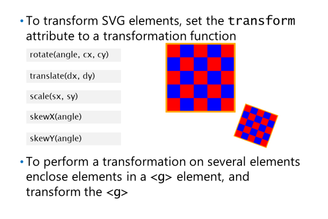

SVG zapewnia element text
, który umożliwia
rysować tekst graficzny. Ty określasz tekst
między tagiem początkowym text a /text
tag końcowy.
SVG zapewnia sposoby dostosowania wyglądu
tekstu:
• Text style
• Text decorations
• Text paths
• Text span
Text Style
Element text
ma szereg atrybutów, które umożliwiają określenie stylu tekstu. Na przykład ty
może ustawić fill, stroke, and stroke-width, aby zdefiniować sposób wypełnienia i konturu tekstu. ty
można również ustawić atrybuty font-size, font-family, and font-weight, aby określić czcionkę dla tekstu.
Text Decorations
Element text
ma atrybut text-decoration , który pobiera listę dekoracji tekstu oddzieloną spacjami.
Obsługiwane są następujące dekoracje tekstu:
• underline
• overline
• line-through
• blink
Poniższy przykład pokazuje, jak ustawić dekoracje tekstowe na elementach text. Elementy text
są
zgrupowane w elemencie g
. Element g
umożliwia grupowanie kształtów SVG i obsługę
wynik, jakby to był pojedynczy kształt. W takim przypadku element g
definiuje wspólny zestaw stylów
oraz wartości właściwości, które mają zastosowanie do wszystkich elementów text w grupie:
Text Paths
Element text
może zawierać element potomny textPath
, który wskazuje ścieżkę, która ma być używana jako podstawa
tekst, gdy jest wyświetlany na stronie internetowej. Na przykład możesz utworzyć textPath
, która rysuje tekst
na obwodzie innego kształtu na stronie.
Poniższy przykład pokazuje, jak używać textPath
. W tym przykładzie tworzony jest element path
reprezentują falistą linię. Element text
ma element potomny textPath
, który prowadzi do path
elementu za pomocą wyrażenia XLink. Wyrażenie XLink umożliwia odniesienie do fragmentu XML lub
Kod HTML za pomocą jego identyfikatora, jak pokazano w poniższym przykładzie:
Text Spans
Element textSpan
może zawierać dowolną liczbę elementów potomnych tspan
, które dzielą tekst na
seria dyskretnych sekcji. Każda sekcja może być stylizowana indywidualnie.
Poniższy przykład pokazuje, jak podzielić element text
za pomocą wielu elementów tspan
Elementy tspan określają sposób rysowania tej konkretnej części tekstu:
Przekształcanie elementów SVG

Transformacje umożliwiają przeniesienie, relocate, resize,
rotate, and reshape elementu. Możesz użyć
transformacje w połączeniu z JavaScript
kod do tworzenia animowanej grafiki.
Możesz zastosować wiele transformacji do kształtu, używając zagnieżdżonych elementów g
, a następnie stosując
przekształć atrybut na każdy kształt. Poniższy przykład pokazuje, jak wykonać wiele transformacji
na prostokącie. Przykład definiuje dwa prostokąty; pierwszy prostokąt jest wyświetlany bez
transformacja, a drugi prostokąt jest wyświetlany z translacją, skalowaniem 0,5, aby uzyskać połowę
oryginalny rozmiar i obrót o 20 stopni wokół punktu środkowego (160, 160):